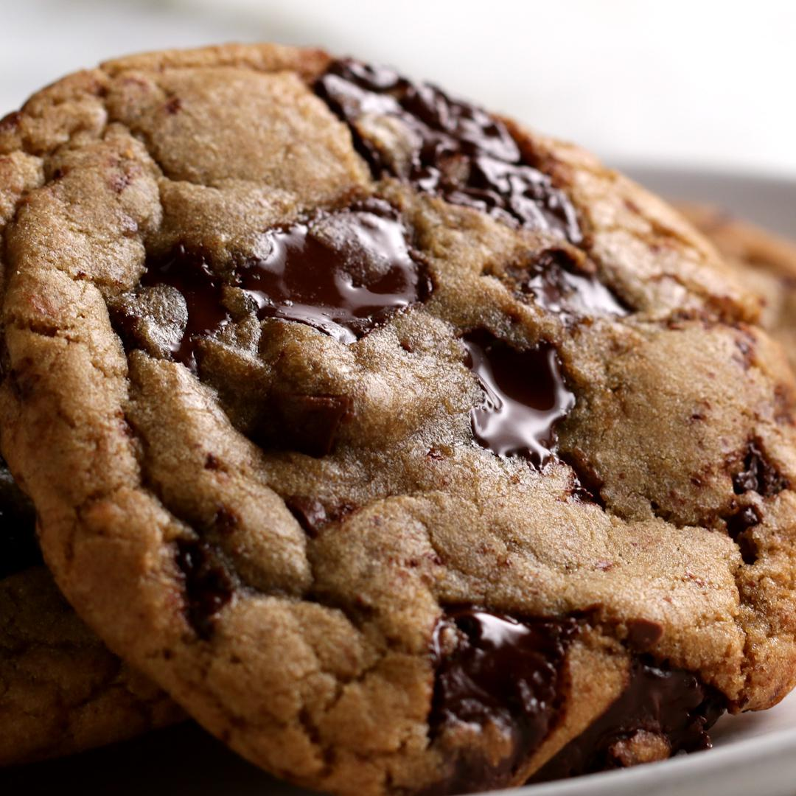

Carmen's Chocolate Chip Cookies

Description
The hardest thing to get right with a chocolate chip cookie is that they are soft and not flat. This recipe delivers every time.
Ingredients
- 4 1/4 cups of flour minus 2 tablestoons
- 1 teaspoon baking powder
- 1 teaspoon baking soda
- 3 sticks softened butter
- 1 1/4 cups sugar
- 1 1/4 cups brown sugar
- 2 large eggs
- 1 tablespoon vanilla
- 12 ounces (package) of milk chocolate chips
Steps
- Preheat oven to 375 degrees fahrenheit
- Combine flour, baking soda, and baking powder and mix
- In a separate bowl, combine butter and sugar beat until creamed
- Stir eggs and vanilla into the creamed sugar
- Gradually stir the dry ingredients into the wet ingredients
- Add chocolate chips
- Drop dough on an ungreased cookie sheet--1/4 cup drops at least 2 inches apart
- Cook 10-14 minutes